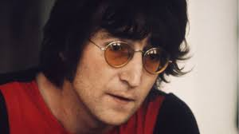
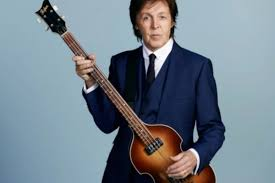
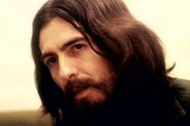
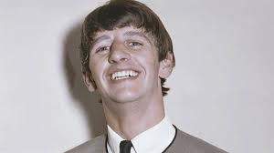

Membros da banda

John Winston Ono Lennon MBE foi um cantor, compositor e ativista da paz britânico que co-fundou os Beatles, a banda de maior sucesso comercial na história da música popular. Sua parceria de composição com o colega de banda Paul McCartney foi uma das mais célebres da história da música.

Sir James Paul McCartney é um cantor, compositor, multi-instrumentista, empresário, produtor musical, cinematográfico e ativista dos direitos dos animais britânico. McCartney alcançou fama mundial como membro da banda de rock britânica The Beatles, com John Lennon, George Harrison e Ringo Starr.

George Harrison, foi um guitarrista, cantor, compositor, produtor musical e cinematográfico inglês que obteve fama internacional como guitarrista dos Beatles.

Sir Richard Starkey Kt, MBE, mais conhecido pelo seu nome artístico Ringo Starr, é um músico, compositor e ator britânico, que ganhou fama como baterista dos Beatles.